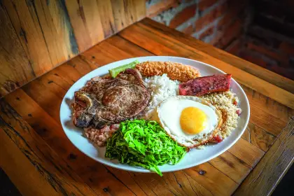

Restaurante SUS
Aperitivos

- Torrada de soupa de tomate - servida com queijo de cabra
- Salada - alface organico com frutas vermelhas e gorgonzola
- Salame - Salame com queijo e azeitona
- Azeitonas e tomates - azeitona preta com tomate ressecado
- Ovo - Ovo de codorna com azeitona
Entradas

- Ricota com azeitona - Pate de ricota com azeitona servido em casquinha caseira
- Canapes de pao de queijo - Canapes servido encima de pao de queijo
- Brusqueta de paris - Brusqueta coberta com queijo de cabra e cogumelos
- Pastelzinho de parmezao - pastel coberto por parmezao e recheado com peito de peru
Entradas

- Mousse de chocolate - Mousse de chocolate com raspas de limao
- Pudim de maracuja - Pudim de maracuja com camadas de chocolate branco
- Pudim de coco queimado - Pudim de coco com raspas de coco queimado
- Pao de mel - Pao de mel na travessa com calda de caramelo
Pratos do dia

Segunda
- Macarrao com salsicha - macarrao ao molho de tomate com rodelas de salsicha
Terça
- Frango assado - frango assado acompanhado de tiras de batata cozida
Quarta
- Macarrao alho e olho - macarrao alho e oleo ao molho branco
Quinta
- Bife acebolado - bife acebolado acompanhado de batata e arroz
sexta
- Tilapia - tilapia ao molho de tomate acompanhada de arroz e salada